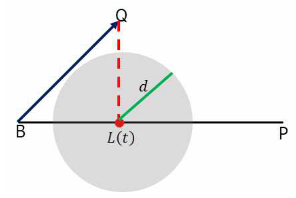

Preventing biased learning in imbalanced data
Strategies to Prevent Biased Learning for Imbalanced Data
I studied strategies to reduce bias toward either class by separately adjusting noise filtering, augmentation size, and where synthetic samples are generated.
- Class-specific filtering · Efficient augmentation size · Boundary-aware SMOTE
- Boundary-aware generation: evaluated on 23 binary classification benchmarks


Research problem
Imbalanced data can produce decision boundaries favoring the majority class. Correcting this can also introduce new bias: removing high-weight minority samples as noise can discard valid information, while excessive synthetic generation can expand the minority region too far.
My dissertation investigates three complementary strategies addressing sample removal criteria, augmentation size, and generation location to reduce bias in both directions.
Approach
1. Class-specific noise filtering criteria
In AdaBoost, high-weight samples have been repeatedly misclassified. Valid but difficult minority samples can also receive high weights, so a single removal criterion for all classes can lose minority information. I compared mean-based and relative criteria that reflect each class’s weight distribution.
Noise-filtering research details
2. Efficient augmentation suited to each dataset
Instead of uniformly augmenting to full class balance, I used classification complexity to reflect class separation and overlap. The key contribution is applying suitable dataset-specific sizes that maintain or improve performance with fewer generated samples. The approach seeks useful learning information while limiting excessive expansion of the minority region.
Oversampling-size research details
3. Boundary-aware SMOTE evaluates generation pairs
SMOTE interpolates between a base sample B and a minority neighbor P. Even with a well-chosen base sample, a randomly selected partner can lead the generation path through an unsuitable region. I therefore evaluated which partner to connect with as well as which base to generate from.
- Constructing local distributions: Uses natural neighbors (NaN), which are mutual neighbors. Extended natural neighbors (ENaN) expand the neighborhood using the union of kNN and reverse kNN.
- Evaluating the generation path: Finds samples in a tube around the B–P segment and averages the minority-class proportions in their natural neighborhoods. The search is limited to B’s natural neighbors and the natural neighbors of those neighbors.
- Evaluating boundary characteristics: Compares mean distances from P to minority and majority natural neighbors, incorporating both proximity to the boundary and characteristics toward the majority class.
- Selecting a generation pair: Multiplies the local-distribution score and boundary score, then normalizes them into partner-selection probabilities. Candidates with only one strong score are downweighted, and selected pairs produce samples through linear interpolation.
Boundary-aware SMOTE experimental setup
I used 23 binary classification benchmarks. Some were formed by choosing different minority classes from the same original dataset. Numerical variables were standardized and categorical variables excluded.
Evaluation used CART, kNN, SVM, logistic regression, and random forest with AUROC and 30 repetitions of 5-fold cross-validation. Comparisons included no oversampling, 8 SMOTE variants, and the proposed NaN/ENaN methods. Full-balancing and half-size augmentation were both examined.
Contributions
Bias prevention through removal, size, and location
I presented filtering that preserves difficult minority samples, smaller dataset-specific augmentation, and partner selection considering generation paths and boundaries. The three strategies address different sources of bias; they were not evaluated simultaneously as a single integrated pipeline.
Results and interpretation of boundary-aware generation
In the SVM comparison, ENaN achieved the best performance on 4 datasets with full balancing and 5 with half-size augmentation. Its mean rank with full balancing was 3.8; the Nemenyi post-hoc test found no significant difference from SMOTE or Safe-Level SMOTE. Performance was competitive for some distributions but not superior on every dataset.
A narrow natural neighborhood can concentrate generation around particular minority samples. Expanding it changes the effects of noise and class overlap. Reduced-size conditions were also evaluated because neighborhood construction and augmentation size jointly affect the results.
Limitations and future work
Relative filtering criteria and particular generation ratios are not always best, and boundary-aware generation remains sensitive to neighborhood distributions. Adaptive criteria and augmentation size during learning, and multiclass extensions, remain future work. The reported experiments concern binary classification.
Paper and code
Doctoral dissertation · SeoulTech dCollection
Related journal research and public code are linked from the class-specific noise filtering and efficient oversampling detail pages.